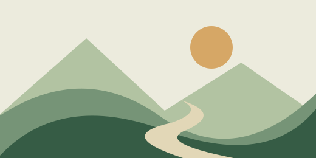

01
Read at your rhythm.
Turn dense paragraphs into simpler language. Read in OpenDyslexic, or listen with built-in text-to-speech.
TEXT SIMPLIFICATIONAlt + S
BUILT FOR A MORE INCLUSIVE WEB
Less friction between people and information. A Chrome extension that simplifies text, describes images, and helps you navigate sensory overload.
The web has a lot to say.
Let’s make it easier to read.
SAME WEB. MORE WAYS TO EXPERIENCE IT.
01 / THE FEATURES
Accessibility isn’t one-size-fits-all.
These tools explore different ways to make
the same content more approachable.
Turn dense paragraphs into simpler language. Read in OpenDyslexic, or listen with built-in text-to-speech.
Find images missing alt text and generate AI descriptions, adding context that can be read by assistive technology.
Sensory Shield analyzes video frames on your device, pausing playback when it detects possible flashing.
02 / A CLOSER LOOK
An interactive preview of the experience.
Illustrative examples, no installation needed.
Neuroplasticity refers to the brain’s capacity to reorganize its neural pathways in response to novel experiences, environmental stimuli, and acquired knowledge throughout an individual’s lifespan.
A sample of complex reading materialSee how this paragraph could look with simpler language and a different reading font.

Example image · illustration“A winding trail runs between green hills beneath a pale sky, with the sun rising behind the distant mountains.”
The extension sends supported images without alt text to Gemini, then adds the returned description to the page.
This is a static illustration. No flashing content is shown.
When possible flashing is detected, the extension pauses the video and presents a warning.
Experimental detection with browser and video-access limitations. It cannot guarantee that every flash will be detected.
This website uses prepared examples to show the concept. Live AI features run in the extension and require a Gemini API key.
03 / THE THINKING BEHIND IT
A dense article. An image with no description. A video that suddenly becomes overwhelming.
Everyday browsing can come with invisible barriers. This project explores a simple question: what if a little support could live right in the browser, alongside the content you already use?
MellowTab brings reading support, visual context, and sensory awareness into one extension. It’s an exploration of thoughtful interfaces and practical AI, with room to learn from the people it aims to support.
04 / UNDER THE HOOD
A lightweight browser extension connecting
native web capabilities with generative AI.
Content scripts adapt the current page. A background service worker handles requests to Gemini for text and image descriptions.
Sensory Shield compares video frames on the device. Text simplification and image descriptions use the external Gemini API.
Next steps include testing with users, evaluating AI descriptions, and improving coverage across different websites and video sources.
AN EXPLORATION IN ACCESSIBLE TECHNOLOGY